10. Oracle Express 11g release 2
Nous abordons maintenant le portage sur Oracle Express 11g release 2 de ce qui a été fait avec MySQL5.
 |
10.1. Mise en place de l'environnement de travail
10.1.1. Environnement eclipse
Nous travaillerons avec l'environnement Eclipse suivant :
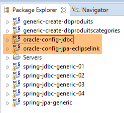 |
Les projets Oracle ci-dessus seront trouvés dans le dossier [<exemples>/spring-database-config\oracle\eclipse].
Note : faire [Alt-F5] pour régénérer l'ensemble des projets Maven.
Lancez Oracle Express et son client [OraManager] (cf paragraphe 23.6). Nous allons générer :
- la bases [dbproduits] avec le projet [generic-create-dbproduits] ;
- la base [dbproduitscategories] avec le projet [generic-create-dbproduitscategories] ;
10.1.2. Création d'utilisateurs
Tout se passe maintenant dans [OraManager]. Le SGBD Oracle doit être lancé. On utilise les identifiants system / system pour l'administrateur système (il faut l'avoir configuré auparavant). Nous allons créer deux utilisateurs :
- [DBPRODUITS / dbproduits] qui sera propriétaire de la base [dbproduits] ;
- [DBPRODUITSCATEGORIES / dbproduitscategories] qui sera propriétaire de la base [dbproduits] ;
 |
 |
- en [6-7], les identifiants sont [system / system] ;
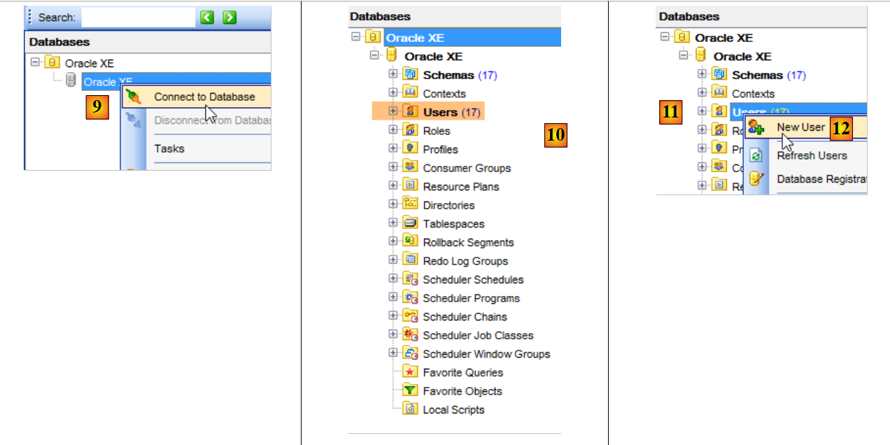 |
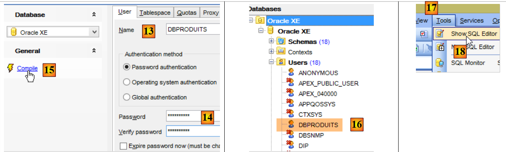 |
- en [14] : mettre dbproduits ;
- en [16], l'utilisateur a été créé mais il n'a pas les droits suffisants pour se connecter. On va les lui donner à l'aide d'un script SQL [17-18] ;
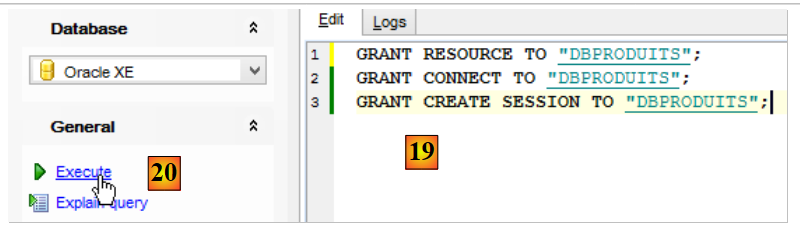 |
- en [19], mettre l'utilisateur en majuscules ;
On refait la même chose pour créer l'utilisateur [DBPRODUITSCATEGORIES / dbproduitscategories] :
 | 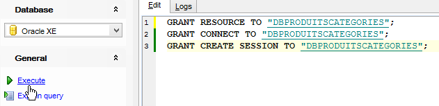 |
 |
10.1.3. Installation du pilote JDBC d'Oracle dans le dépôt Maven
Le pilote JDBC d'Oracle n'est pas disponible dans les dépôts Maven centraux. On doit le télécharger auprès d'Oracle [http://www.oracle.com/technetwork/apps-tech/jdbc-112010-090769.html] :
 |
Une fois téléchargé, il faut l'installer dans le dépôt Maven local. Cela se fait avec le script DOS [install.bat] [2] suivant :
"%M2_HOME%\bin\mvn.bat" install:install-file -Dfile=ojdbc6.jar -Dpackaging=jar -DgroupId=com.oracle.jdbc -DartifactId=ojdbc6 -Dversion=1.0
où on remplacera [%M2_HOME%] par le chemin du répertoire d'installation de Maven (cf paragraphe 23.2). Ceci fait, le pilote JDBC peut être alors importé dans les projets Maven par la configuration :
<dependency>
<groupId>com.oracle.jdbc</groupId>
<artifactId>ojdbc6</artifactId>
<version>1.0</version>
</dependency>
10.1.4. Génération de la base de données [dbproduits]
Maintenant que nous avons un utilisateur [DBPRODUITS / dbproduits], nous allons nous connecter à Oracle avec ces identifiants :
 |
 |
- en [6], mettre dbproduits ;
- en [9], la base [DBPRODUITS] que nous allons exploiter ;
Dans la classe [ConfigJdbc] du projet [oracle-config-jdbc], les paramètres de connexion utilisés sont les suivants :
public final static String DRIVER_CLASSNAME = "oracle.jdbc.OracleDriver";
public final static String URL_DBPRODUITS = "jdbc:oracle:thin:@localhost:1521:xe";
public final static String USER_DBPRODUITS = "DBPRODUITS";
public final static String PASSWD_DBPRODUITS = "dbproduits";
public final static String URL_DBPRODUITSCATEGORIES = "jdbc:oracle:thin:@localhost:1521:xe";
public final static String USER_DBPRODUITSCATEGORIES = "DBPRODUITSCATEGORIES";
public final static String PASSWD_DBPRODUITSCATEGORIES = "dbproduitscategories";
Vous devez les adapter à votre configuration Oracle.
Dans le projet [oracle-config-jpa-eclipselink], l'entité JPA est définie de la façon suivante :
 |
package generic.jpa.entities.dbproduits;
import generic.jdbc.config.ConfigJdbc;
import javax.persistence.Column;
import javax.persistence.Entity;
import javax.persistence.GeneratedValue;
import javax.persistence.Id;
import javax.persistence.SequenceGenerator;
import javax.persistence.Table;
@Entity(name="Produit1")
@Table(name = ConfigJdbc.TAB_PRODUITS)
public class Produit {
// champs
@Id
@GeneratedValue(strategy=GenerationType.SEQUENCE,generator="genSeqProduits")
@SequenceGenerator(name="genSeqProduits",sequenceName="PRODUITS_SEQUENCE", allocationSize=5)
@Column(name = ConfigJdbc.TAB_PRODUITS_ID)
private Long id;
@Column(name = ConfigJdbc.TAB_PRODUITS_NOM, unique = true, length = 30, nullable = false)
private String nom;
@Column(name = ConfigJdbc.TAB_PRODUITS_CATEGORIE, nullable = false)
private int categorie;
@Column(name = ConfigJdbc.TAB_PRODUITS_PRIX, nullable = false)
private double prix;
@Column(name = ConfigJdbc.TAB_PRODUITS_DESCRIPTION, length = 100, nullable = false)
private String description;
...
}
- lignes 18-19 : la stratégie de génération de la clé primaire de la table [PRODUITS] est [strategy=GenerationType.SEQUENCE]. Pour MySQL, on avait utilisé la stratégie [@GeneratedValue(strategy = GenerationType.IDENTITY)]. Avec Oracle Express 11g, cette stratégie n'est pas utilisable ;
- ligne 18 : on indique que la clé primaire sera obtenue via un générateur de nombres qu'on appelle souvent des séquences ;
- ligne 19 : le générateur de séquences (l'attribut name référence le générateur de la ligne 18) va créer une séquence appelée [PRODUITS_SEQUENCE] dans la base [dbproduits]. Parce qu'on veut la portabilité entre implémentations JPA, il est important de nommer la séquence. Sinon, en l'absence de la ligne 19, les trois implémentations JPA vont créer des séquences qui n'auront pas le même nom rendant impossible l'exploitation par JPA2 d'une base créée par JPA1 ;
Nous sommes prêts pour exécuter la configuration [generic-create-dbproduits-eclipselink] :
 |  |
L'exécution de cette configuration crée deux objets :
- une table [PRODUITS] ;
- une séquence appelée [PRODUITS_SEQUENCE]
 |  |
La DDL de la table [PRODUITS] est la suivante :
 |
La clé primaire [ID] n'est pas auto-incrémentée comme elle l'était avec MySQL. Or le projet [spring-jdbc-03] suppose que le SGBD s'occupe de générer les clés primaires de la table [PRODUITS]. Nous allons créer un trigger ou déclencheur. Un trigger est une procédure stockée au sein du SGBD qui s'exécute sous certaines conditions. Nous allons créer un trigger qui, à chaque nouvelle insertion, génère la clé primaire du produit inséré à partir de la séquence [PRODUITS_SEQUENCE] créée par la configuration JPA.
 |
- en [6], le trigger [PRODUITS_ID_TRIGGER] [4] sera exécuté avant chaque insertion ;
- en [7], une procédure stockée propre au SGBD Oracle. Elle indique que le champ [ID] de la ligne qui va être insérée doit être initialisé avec la valeur suivante du générateur nommé [PRODUITS_SEQUENCE] ;
 |
La base [dbproduits] est désormais prête. Exécutez les configurations suivantes :
- [spring-jdbc-generic-01.IntroJdbc01] ;
- [spring-jdbc-generic-01.IntroJdbc02] ;
- [spring-jdbc-generic-03.JUnitTestDao1] ;
- [spring-jdbc-generic-03.JUnitTestDao2] ;
Elles doivent toutes réussir.
10.1.5. Génération de la base de données [dbproduitscategories]
 |
Nous exécutons maintenant le projet [generic-create-dbproduitscategories] qui va générer la base [dbproduitscategories]. Avant cela, dans [OraManager], nous nous connectons avec les identifiants [DBPRODUITSCATEGORIES / dbproduitscategories] afin de pouvoir observer les modifications apportées à la base [dbproduitscategories] :
 |  | 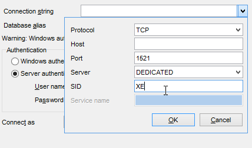 |
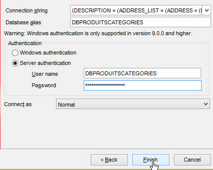 |  |
 |
Les entités JPA utilisées ont les stratégies suivantes de génération des clés primaires :
[Categorie]
public class Categorie implements AbstractCoreEntity {
@Id
@GeneratedValue(strategy=GenerationType.SEQUENCE,generator="genSeqCategories")
@SequenceGenerator(name="genSeqCategories",sequenceName="CATEGORIES_SEQUENCE", allocationSize=5)
@Column(name = ConfigJdbc.TAB_JPA_ID)
protected Long id;
[Produit]
public class Produit implements AbstractCoreEntity {
// propriétés
@Id
@GeneratedValue(strategy=GenerationType.SEQUENCE,generator="genSeqProduits2")
@SequenceGenerator(name="genSeqProduits2",sequenceName="PRODUITS_SEQUENCE", allocationSize=5)
@Column(name = ConfigJdbc.TAB_JPA_ID)
protected Long id;
[Role]
public class Role implements AbstractCoreEntity {
// propriétés
@Id
@GeneratedValue(strategy=GenerationType.SEQUENCE,generator="genSeqRoles")
@SequenceGenerator(name="genSeqRoles",sequenceName="ROLES_SEQUENCE", allocationSize=5)
@Column(name = ConfigJdbc.TAB_JPA_ID)
protected Long id;
[User]
public class User implements AbstractCoreEntity {
// propriétés
@Id
@GeneratedValue(strategy=GenerationType.SEQUENCE,generator="genSeqUsers")
@SequenceGenerator(name="genSeqUsers",sequenceName="USERS_SEQUENCE", allocationSize=5)
@Column(name = ConfigJdbc.TAB_JPA_ID)
protected Long id;
[UserRole]
public class UserRole implements AbstractCoreEntity {
// propriétés
@Id
@GeneratedValue(strategy=GenerationType.SEQUENCE,generator="genSeqUsersRoles")
@SequenceGenerator(name="genSeqUsersRoles",sequenceName="USERS_ROLES_SEQUENCE", allocationSize=5)
@Column(name = ConfigJdbc.TAB_JPA_ID)
protected Long id;
Comme il a été procédé pour la base [dbproduits], cinq séquences vont être générées. Elles sont utilisées par les implémentations JPA pour générer les clés primaires. Les implémentations JPA n'utilisent pas de triggers comme nous avons fait précédemment mais elles interrogent les séquences pour avoir la clé primaire suivante. Nous, nous génèrerons les clés primaires également avec des triggers. Ceux-ci sont nécessaires au projet [spring-jdbc-04].
Nous exécutons la configuration [generic-create-dbproduitscategories-eclipselink] :
 |  |
et nous obtenons le résultat suivant :
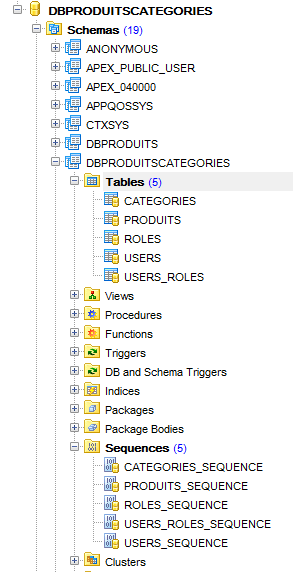 |
Nous générons ensuite cinq triggers pour générer les clés primaires des cinq tables :
 |
Les triggers sont associés aux tables de la façon suivante :
CATEGORIES | CATEGORIES_ID_TRIGGER | CATEGORIES_SEQUENCE |
PRODUITS | PRODUITS_ID_TRIGGER | PRODUITS_SEQUENCE |
ROLES | ROLES_ID_TRIGGER | ROLES_SEQUENCE |
USERS | USERS_ID_TRIGGER | USERS_SEQUENCE |
USERS_ROLES | USERS_ROLES_ID_TRIGGER | USERS_ROLES_SEQUENCE |
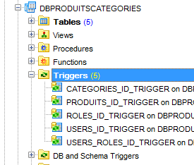 |
Le projet [spring-jdbc-04] a besoin que la colonne [VERSIONING] ait une valeur par défaut dans chacune des tables :
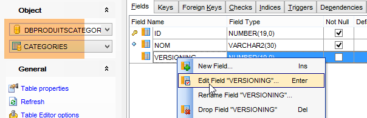 |  |
On fait cela pour les cinq tables.
Maintenant, exécutez les configurations :
- [spring-jdbc-generic-04.JUnitTestDao] ;
- [spring-jpa-generic-JUnitTestDao-hibernate-eclipselink] ;
Elles doivent réussir toutes les deux.
10.2. Configuration de la couche JDBC
 |  |
Le projet [oracle-config-jdbc] configure la couche [JDBC] de l'architecture de tests suivante :
 |
Le projet est analogue au projet de configuration [mysql-config-jdbc] de la couche JDBC du SGBD MySQL (cf paragraphe 3.3). Nous ne présentons que les modifications :
Le fichier [pom.xml] importe le pilote JDBC d'Oracle :
<project xmlns="http://maven.apache.org/POM/4.0.0" xmlns:xsi="http://www.w3.org/2001/XMLSchema-instance"
xsi:schemaLocation="http://maven.apache.org/POM/4.0.0 http://maven.apache.org/xsd/maven-4.0.0.xsd">
<modelVersion>4.0.0</modelVersion>
<groupId>dvp.spring.database</groupId>
<artifactId>generic-config-jdbc</artifactId>
<version>0.0.1-SNAPSHOT</version>
<name>configuration generic jdbc</name>
<parent>
<groupId>org.springframework.boot</groupId>
<artifactId>spring-boot-starter-parent</artifactId>
<version>1.2.3.RELEASE</version>
</parent>
<dependencies>
<!-- dépendances variables ********************************************** -->
<!-- pilote JDBC du SGBD -->
<dependency>
<groupId>com.oracle.jdbc</groupId>
<artifactId>ojdbc6</artifactId>
<version>1.0</version>
</dependency>
<!-- dépendances constantes ********************************************** -->
....
</dependencies>
...
</project>
- lignes 18-22 : le pilote JDBC d'Oracle remplace celui de MySQL ;
La seconde modification est dans la classe [ConfigJdbc] qui définit les identifiants d'accès aux bases :
// paramètres de connexion
public final static String DRIVER_CLASSNAME = "oracle.jdbc.OracleDriver";
public final static String URL_DBPRODUITS = "jdbc:oracle:thin:@localhost:1521:xe";
public final static String USER_DBPRODUITS = "DBPRODUITS";
public final static String PASSWD_DBPRODUITS = "dbproduits";
public final static String URL_DBPRODUITSCATEGORIES = "jdbc:oracle:thin:@localhost:1521:xe";
public final static String USER_DBPRODUITSCATEGORIES = "DBPRODUITSCATEGORIES";
public final static String PASSWD_DBPRODUITSCATEGORIES = "dbproduitscategories";
La troisième modification est apportée au nombre maximal de paramètres qu'un peut supporter :
// nombre max de paramètres d'un [PreparedStatement]
public final static int MAX_PREPAREDSTATEMENT_PARAMETERS = 1000;
Le test [JUnitTestPushTheLimits] génère des ordres SQL sur 5000 produits qui vont générer des [PreparedStatement] avec 5000 paramètres. MySQL avait supporté cette valeur mais pas Oracle. On a baissé cette valeur à 1000 et ça passe.
10.3. Configuration de la couche JPA EclipseLink
 |  |
Note : faire [Alt-F5] pour régénérer l'ensemble des projets Maven.
Le projet [oracle-config-jpa-eclipseLink] configure la couche [JPA] de l'architecture de tests :
 |
Le projet est analogue au projet de configuration [mysql-config-jpa-eclipselink] (cf paragraphe 7.3) de la couche JPA Eclipselink du SGBD MySQL. Nous ne présentons que les modifications :
La première est dans la classe [ConfigJpa] dans la définition du bean [jpaVendorAdapter] :
// le provider JPA
@Bean
public JpaVendorAdapter jpaVendorAdapter() {
// Note : les entités JPA et la configuration d'Eclipselink sont dans le fichier META-INF/persistence.xml
EclipseLinkJpaVendorAdapter eclipseLinkJpaVendorAdapter = new EclipseLinkJpaVendorAdapter();
eclipseLinkJpaVendorAdapter.setShowSql(false);
eclipseLinkJpaVendorAdapter.setDatabase(Database.ORACLE);
eclipseLinkJpaVendorAdapter.setGenerateDdl(true);
return eclipseLinkJpaVendorAdapter;
}
- ligne 7 : on indique à l'implémentation JPA qu'elle va travailler avec une base Oracle. L'implémentation JPA va alors adopter et les types de données propriétaires et le SQL propriétaire d'Oracle.
La seconde modification est dans la stratégie de génération des clés primaires. La nouvelle stratégie a été présentée au paragraphe 10.1.
10.4. Configuration de la couche JPA Hibernate
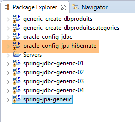 |  |
Note : faire [Alt-F5] pour régénérer l'ensemble des projets Maven.
Le projet [oracle-config-jpa-hibernate] est analogue au projet [mysql-config-jpa-hibernate] (paragraphe 6.3) avec les mêmes modifications qui ont présidé au portage du [mysql-config-jpa-eclipselink] vers le projet [oracle-config-jpa-eclipselink] (paragraphe 10.3).
Ces modifications faites, l'exécution de la configuration [spring-jpa-generic-JUnitTestDao-hibernate-eclipselink] doit réussir.
10.5. Configuration de la couche JPA OpenJpa
 |  |
Note : faire [Alt-F5] pour régénérer l'ensemble des projets Maven.
Le projet [oracle-config-jpa-openjpa] est analogue au projet [mysql-config-jpa-openjpa] (paragraphe 8.3) avec les mêmes modifications qui ont présidé au portage du [mysql-config-jpa-eclipselink] vers le projet [oracle-config-jpa-eclipselink] (paragraphe 10.3).
Ces modifications faites, l'exécution de la configuration [spring-jpa-generic-JUnitTestDao-openjpa] doit réussir.
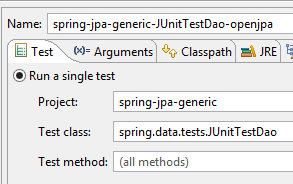 |  |